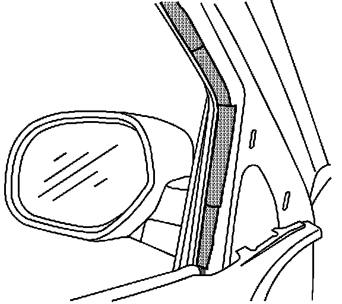

Body - Wind Noise From Front Doors
Bulletin No.: 06-08-64-025Date: July 24, 2006
TECHNICAL
Subject:
Road/Wind Noise at Driver or Passenger Front Door Area (Install Tape and Filler)
Models:
2007 Cadillac Escalade, Escalade ESV, Escalade EXT
Condition
Some customers may comment on wind noise in the driver or passenger door area.
Cause
Air may be rushing in behind the mirror, causing a noise and/or the window channel clips may not be fully engaged to the window frame.
Correction
Install filler in behind the upper extension panel and seal the window channel clips to the window flange.

1. Remove the upper extension trim panel and tape up the mirror harness pass-thru as seen in the illustration.
2. Install the sharkfin interior filler into the opening as seen in the illustration above.
3. Remove the door trim panel. Refer to SI.
4. Remove the window garnish molding. Refer to SI.
5. Remove the inner door glass belt strip.
6. Remove the window channel weatherstrip from the channel.
7. Inspect the window channel retaining clips. The clips should be fully engaged through the flange.

8. Install tape around the window channel and flange. Do the complete opening from front to rear. The tape should only extend 14 mm (1/2 in.) in height on the inboard flange so it can't be seen when the garnish molding is installed. The illustration above shows how the tape should look when installing.
9. Install the window channel weatherstrip.
10. Install the inner door glass belt strip.
11. Install the window garnish molding. Refer to SI.
12. Install the door trim panel. Refer to SI.
13. Install the upper extension trim panel.
Parts Information
Warranty Information
For vehicles repaired under warranty, use the table.

Disclaimer